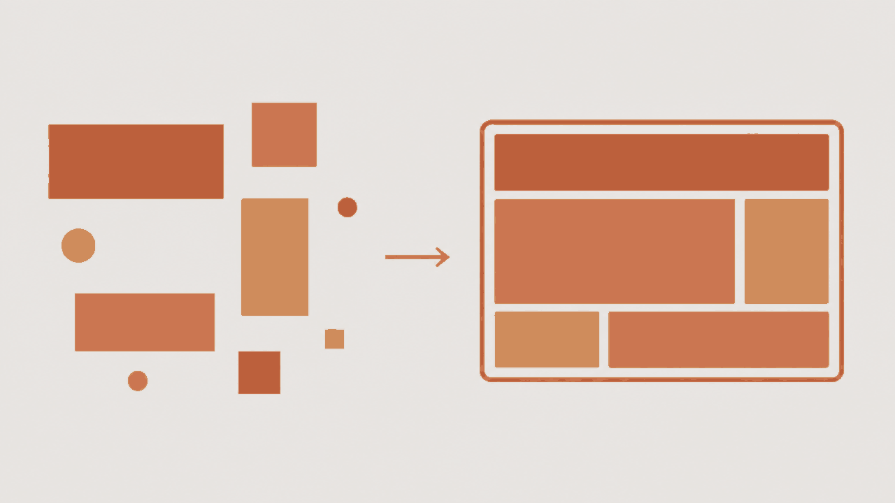

golem-ui
UI components with one ABI, built so an agent assembling a screen unattended gets it right the first time.

What it is
A React component kit whose first reader is an agent. Nine components — shell, chat, record list, record form, report, timeline, upload, editor, auth — cover the bones of a small app that several people use together. A person never assembles a screen from them by hand; an agent does, from a sentence of intent, and every choice in the kit is judged by whether that makes the agent's output right the first time.
Every component has the same outer shape:
config
and
adapters. Config is plain JSON-serializable data — what the component is — validated
by a schema on mount, with unknown fields rejected and a bad value drawing a loud error
card that names the field and the rule. Adapters are how the component talks to the
world: records, files, identity, chat, clock, navigation. A component never imports a
data layer, a router or a fetch. It calls what it was handed.
The split is the whole trick. Config is generated, adapters are wired, so a wrong query never reads as a wrong layout. The kit ships an in-memory fake of every adapter, so stories, tests and the showcase run with no backend and no network. The docs are generated from the same schemas that do the validating, which is why what the agent reads cannot drift from what runs.
Quick start
Not on npm yet — install from the repository until the first release.
pnpm add golem-uiimport { Shell } from 'golem-ui'
import 'golem-ui/styles.css'
<Shell
config={{ title: 'Northgate Cycles', chatSide: 'left', breakpoint: 768, showTopBar: true }}
adapters={{ identity, navigation }}
chat={<AgentChat />}
canvas={<TodayScreen />}
/>Every other component takes the same two props. The API pages carry each one's config table, its adapters, a running example and its failure modes.
Everything that is deployed
-
Showcase app
A demo bike shop built only from these components on the fakes. Phone first, sign in as anyone.
/app/
-
API pages
One page per component, five fixed sections, readable signed out on a phone. This is the spec the agent reads.
/app/#/api
-
Adapters
The interfaces a component talks to the world through, and the in-memory fakes that stand in for them.
/app/#/adapters
-
Storybook
Every example as a live story, including the invalid-config one. A desktop site.
/storybook/
-
Repository
Source, issues and the eight-step checklist for adding a component. MIT.
github.com/tonylampada/golem-ui
-
npm package
npm i golem-ui react react-dom. ESM, types and one stylesheet.npmjs.com/package/golem-ui